Справочник по MongoDB · практикум · после модуля 1
ПРАКТИКУМ
Онлайн-разбор запроса:
explain и индексы
Запрос к журналу сервиса возвращает 33 записи, а сервер при этом читает все 1200. Работа состоит в том, чтобы увидеть это в плане выполнения, построить индекс и повторить замер. План разбирается на бесплатном сайте, который рисует его схемой и называет нужный порядок полей.
«Просмотрено 1200 документов, возвращено 33.»
- После модуля
- 1 · подключение и первые данные
- База
logs, коллекцияevents— 1200 документов- Инструмент
- Compass или оболочка
mongoshи онлайн-разбор плана - Время
- 90 минут
- Результат
README.mdс числами и три ссылки на разборы
§1Что здесь разбирается
В модуле 1 все запросы шли по маленьким коллекциям: 21 товар, 120 заказов. На таком объёме любой запрос отвечает мгновенно, и понять, дорого он обходится или дёшево, по времени ответа нельзя. Коллекция logs.events содержит 1200 записей журнала — этого уже хватает, чтобы разница была видна в числах.
MongoDB может показать, как она выполнила запрос. Метод explain("executionStats") возвращает документ с планом выполнения: какие шаги сервер прошёл, сколько документов прочитал и сколько вернул. Работа идёт с этим документом.
Ключевых чисел в нём три:
nReturned— сколько документов запрос вернул;totalDocsExamined— сколько документов сервер для этого прочитал;totalKeysExamined— сколько записей индекса он просмотрел.
Когда totalDocsExamined равно числу документов в коллекции, сервер прочитал коллекцию целиком. Такой шаг называется COLLSCAN — полный перебор. Когда чтению предшествует индекс, в плане появляется шаг IXSCAN, и totalDocsExamined становится близким к nReturned: сервер идёт сразу к нужным документам.
Полный вид документа explain — вложенные объекты на несколько экранов, и читать его в терминале неудобно. Поэтому план выгружается в файл и разбирается на сайте, который показывает шаги схемой сверху вниз и подсвечивает дорогие места.
§2Три сайта
Все три работают в браузере, бесплатны и не требуют регистрации. В работе обязателен первый, второй берётся для сверки, третий — запасной вариант, если нужно проверить запрос без стенда. Остальное рабочее окружение вокруг базы разобрано в разделе «Инструменты и материалы».
Четвёртый инструмент работы — Compass, тот же графический клиент, что в модуле 1. Он ставится на компьютер и показывает план сам; как это делается, разобрано в §3.
Принимает JSON плана, рисует шаги дерева выполнения и раскрашивает их по стоимости. Разбирает запрос по правилу ESR и пишет, какой индекс под него подходит. Кнопка обмена сворачивает план в ссылку — её и нужно сдать.
Тот же разбор, но с общей оценкой эффективности запроса в баллах. Пригодится, чтобы сверить вывод: два разных инструмента на одном плане должны назвать одно и то же узкое место.
Песочница: слева документы коллекции, справа запрос, снизу результат. Сервера и данных не требует, плана выполнения не показывает. Нужна, чтобы собрать и проверить сам запрос, если стенд под рукой не запускается.
Вставленный план уходит на чужой сайт, а ссылка на него доступна любому, кто её получил. Данные на стенде учебные, поэтому здесь ограничений нет. На рабочем проекте перед вставкой из плана убирают значения фильтра: в поле command видны реальные параметры запроса.
§3Стенд и три способа снять план
Работа идёт на базе logs учебного стенда. Стенд поднимается один раз и дальше используется без перезапуска.
git clone https://github.com/MaximBytecamp/mongodb-practice.git cd mongodb-practice docker compose up -d # сервер, учебные базы и mongo-express docker compose run --rm reset # исходное состояние: 1200 событий, индексов нет
git clone https://github.com/MaximBytecamp/mongodb-practice.git cd mongodb-practice docker compose up -d # сервер, учебные базы и mongo-express docker compose run --rm reset # исходное состояние: 1200 событий, индексов нет
git clone https://github.com/MaximBytecamp/mongodb-practice.git cd mongodb-practice docker compose up -d # сервер, учебные базы и mongo-express docker compose run --rm reset # исходное состояние: 1200 событий, индексов нет
Индексы по ходу работы создаются и удаляются в оболочке mongosh. Она открывается одной командой и дальше остаётся открытой всю работу:
docker compose exec mongo mongosh logs
Без Docker оболочка запускается напрямую: mongosh "mongodb://localhost:27017/logs", а данные заливаются скриптом bash stend/load.sh, как в главе 1.0.
Документ события выглядит так. Поля service, level, ts и duration_ms участвуют в запросах работы.
logs> db.events.findOne() { _id: 'e-00001', ts: ISODate('2026-09-01T00:00:59.000Z'), service: 'api-gateway', // какой сервис записал событие level: 'info', // info, warn или error route: '/api/orders/{id}', status: 200, duration_ms: 16, // сколько заняла обработка user_id: 'c-015', trace: 'tr-886522' }
Какой способ выбрать
План снимают тремя способами. Они дают одинаковый результат и отличаются тем, чем вы пользуетесь и что получаете на выходе.
| Способ | Чем пользуетесь | Что получаете | Когда брать |
|---|---|---|---|
| A · Compass | Окно программы, мышь | План на экране, JSON по кнопке в буфере | Посмотреть план и разобраться. Терминал не нужен совсем |
| Б · скрипт | Одна команда без кавычек | Готовый файл plan-N.json в папке отчёта | Собрать файлы для сдачи. Работает в любой оболочке |
| В · mongosh | Длинная команда в терминале | Файл через перенаправление вывода | Если привычнее терминал. В cmd.exe не работает |
В работе понадобятся два: способ А, чтобы видеть план сразу после каждого изменения индекса, и способ Б, чтобы получить файлы для отчёта. Способ В оставлен как запасной.
Способ А · Compass: план на экране
Compass — официальный графический клиент, тот же, что в главах модуля 1. Подключение к стенду — адрес mongodb://localhost:27017, затем база logs и коллекция events.
Запрос набирается в панели наверху: фильтр — в поле Type a query, сортировка — в Options → Sort. Кнопка Find выполняет запрос, кнопка Explain рядом с ней снимает план.
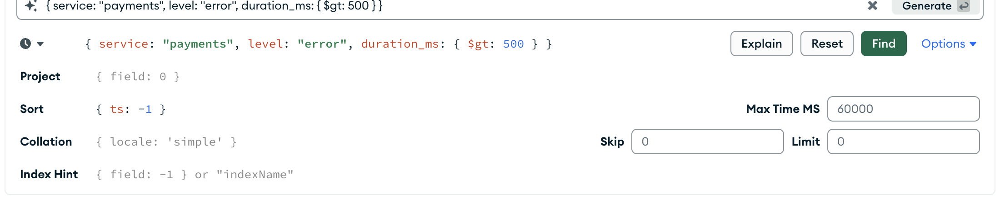
logs.events: фильтр в верхнем поле, сортировка в Options → Sort, кнопка Explain слева от FindФильтр и сортировка здесь пишутся ровно так же, как в find и sort — это те же документы. Кавычки вокруг имён полей Compass не требует.
Кнопка Explain открывает окно с планом. Вкладка Visual Tree — схема шагов, справа — сводка по запросу.
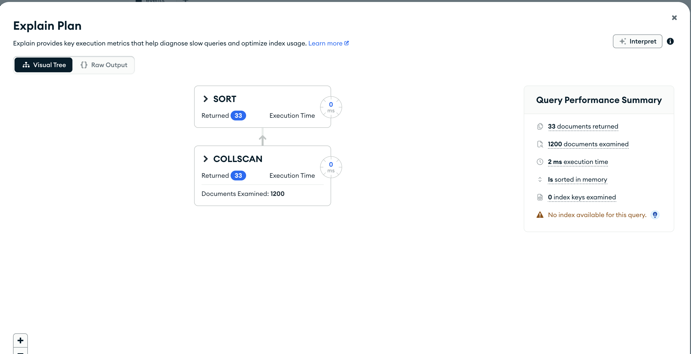
Сводка Query Performance Summary — это те же числа, которые дальше разбираются в §4, только словами: 33 documents returned, 1200 documents examined, 0 index keys examined. Строка Is sorted in memory говорит, что сортировка шла в памяти, а No index available for this query — что индекса под этот запрос нет.
Вторая вкладка отдаёт тот же план текстом.
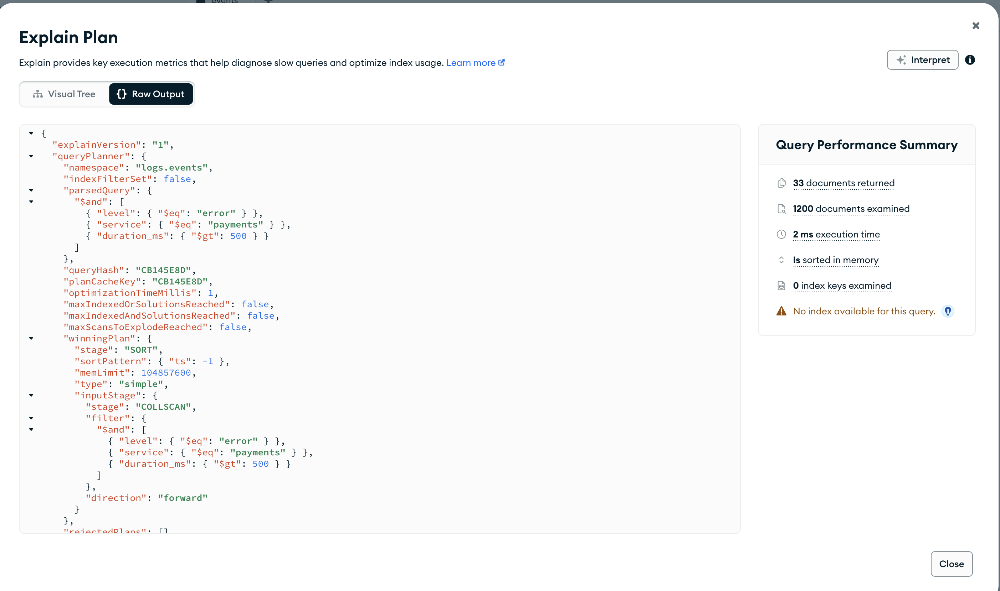
Отсюда план попадает в онлайн-разбор без единого файла: Copy — и сразу вставка в поле на Paste the Plan. Для отчёта файл всё равно понадобится, поэтому скопированный JSON либо сохраняют в редакторе как plan-N.json, либо берут способ Б, который делает это сам.
Способ Б · скрипт: запрос внутри файла
В репозитории практик лежит plan.py. Запрос в нём задан прямо в тексте файла, поэтому через оболочку не проходят ни кавычки, ни фигурные скобки, ни знак $. Команда запуска состоит из простых слов и одинаково работает в PowerShell, cmd.exe, Терминале macOS и Linux.
Скопируйте файл в свою рабочую папку — он станет частью отчёта вместе с планами:
mkdir work\praktikum-explain copy praktikum-explain\plan.py work\praktikum-explain\
mkdir -p work/praktikum-explain cp praktikum-explain/plan.py work/praktikum-explain/
mkdir -p work/praktikum-explain cp praktikum-explain/plan.py work/praktikum-explain/
Внутри файла есть блок, в котором вы меняете запрос. Всё остальное трогать не нужно.
# ───────────────────────────────────────────────────────────── # ЗАПРОС. Меняете только этот блок. # ───────────────────────────────────────────────────────────── BAZA = "logs" KOLLEKCIYA = "events" # Фильтр — тот же документ, что вы пишете в find({...}). FILTR = { "service": "payments", "level": "error", "duration_ms": {"$gt": 500}, } # Сортировка: поле и направление. 1 — по возрастанию, -1 — по убыванию. SORTIROVKA = [("ts", -1)] # Сколько документов вернуть. 0 — все. PREDEL = 0 # Куда положить план. Файл ложится рядом с этим скриптом. FAYL = "plan-1.json"
Запуск — одна команда. Кавычек в ней нет, поэтому её можно вставлять в любую оболочку:
docker compose run --rm python work/praktikum-explain/plan.py
Имя файла можно задать одним словом в конце — тогда менять FAYL в тексте не нужно:
docker compose run --rm python work/praktikum-explain/plan.py plan-2.json
Скрипт печатает то, что записал: числа для отчёта видны сразу, открывать файл не нужно.
Запрос к logs.events, всего документов в коллекции: 1200
фильтр: {"service": "payments", "level": "error", "duration_ms": {"$gt": 500}}
сортировка: [('ts', -1)]
предел: нет
файл с планом: plan-1.json
возвращено: 33
документов просмотрено:1200
ключей просмотрено: 0
шаги плана: COLLSCAN → SORT
индексы коллекции: _id_
Последняя строка показывает индексы коллекции на момент замера. По ней сразу видно, если от предыдущей задачи остался лишний индекс; от этого чаще всего и расходятся числа.
Индексы скрипт не создаёт и не удаляет: он снимает план того состояния коллекции, которое вы сделали в оболочке или в Compass. Порядок работы от этого не меняется — создали индекс, сняли план, разобрали его на сайте.
Способ В · mongosh: одной командой
Тот же план можно снять из терминала. Команда длинная, и у неё два ограничения: в cmd.exe она не работает, потому что там одинарные кавычки не группируют текст в один аргумент, а в Windows PowerShell 5.1 обычное перенаправление > сохраняет файл в UTF-16, и визуализатор такой файл не прочитает.
docker compose exec -T mongo mongosh --quiet logs --eval '
EJSON.stringify(
db.events.find({ service: "payments", level: "error", duration_ms: { $gt: 500 } })
.sort({ ts: -1 })
.explain("executionStats")
)' | Out-File plan-1.json -Encoding utf8
docker compose exec -T mongo mongosh --quiet logs --eval '
EJSON.stringify(
db.events.find({ service: "payments", level: "error", duration_ms: { $gt: 500 } })
.sort({ ts: -1 })
.explain("executionStats")
)' > plan-1.json
docker compose exec -T mongo mongosh --quiet logs --eval '
EJSON.stringify(
db.events.find({ service: "payments", level: "error", duration_ms: { $gt: 500 } })
.sort({ ts: -1 })
.explain("executionStats")
)' > plan-1.json
Команда показана в несколько строк, чтобы её было видно целиком. Вставлять в терминал её надо одной строкой: при вставке многострочного текста оболочка выполняет каждую строку отдельно, и команда рвётся на первом же переносе. Кнопка копировать в одну строку в шапке блока кладёт в буфер уже собранный однострочный вариант.
Флаг -T отключает выделение терминала — без него перенаправление в файл ломается. --quiet убирает приветствие сервера, чтобы в файле остался только JSON. Функция EJSON.stringify превращает документ плана в строку JSON, в которой даты и числа BSON записаны так, что сайт их разберёт.
Compass, скрипт и mongosh обращаются к одному серверу и получают один и тот же документ плана. Числа у всех трёх совпадут. Если не совпали, между замерами изменилось состояние коллекции — чаще всего остался индекс от прошлой задачи.
§4Что показывает разбор
Дальше разобрано, что именно выводит Paste the Plan и на какие места смотреть. Кадры сняты на планах этого практикума, поэтому числа на них совпадут с вашими, если базы сброшены командой docker compose run --rm reset.
Поле ввода
Плана на сайте нет, пока вы его не вставили: сайт к вашей базе не подключается и работает только с тем текстом, который вы дали. В поле идёт содержимое файла целиком, от первой скобки до последней.
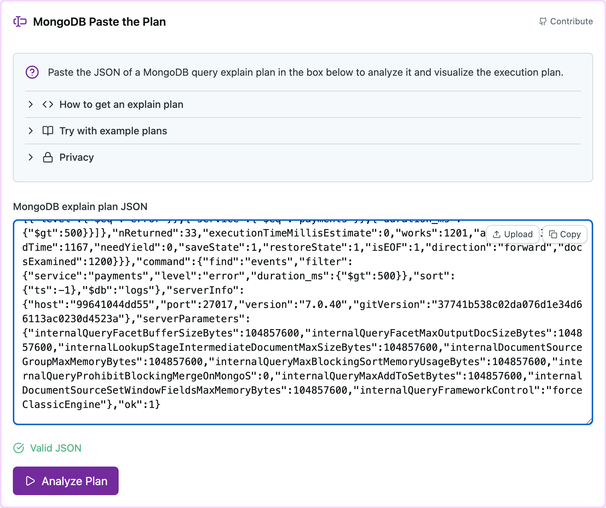
Отметка Valid JSON зелёная — файл разобран. Если вместо неё сообщение об ошибке, план снят способом В и в файл попало лишнее: приветствие сервера (забыт флаг --quiet) или кодировка UTF-16 от перенаправления > в Windows PowerShell. У Compass и у скрипта такой ошибки не бывает.
Разобранная команда
Первое, что показывает сайт после нажатия Analyze Plan, — сам запрос, восстановленный из плана.
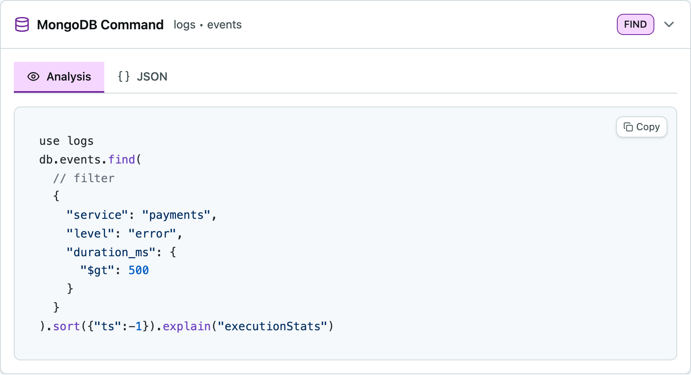
Эта карточка нужна для проверки, что разбирается тот план, который вы сняли. В шапке стоят база и коллекция — logs · events, справа вид операции — FIND. Если там оказалась другая коллекция или другой фильтр, вы вставили файл от прошлой задачи.
Плитки метрик
Под заголовком Execution Stats идут восемь плиток. Три верхних числа записываются в отчёт.
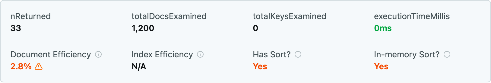
Что означает каждая плитка:
| Плитка | Что это | На что смотреть |
|---|---|---|
nReturned | Сколько документов запрос вернул | Совпадает ли с тем, что вы получили в оболочке. Если нет — разбирается чужой план |
totalDocsExamined | Сколько документов сервер прочитал | Равно числу документов в коллекции — значит, был полный перебор |
totalKeysExamined | Сколько записей индекса просмотрено | Ноль означает, что индекс не использован совсем |
executionTimeMillis | Сколько заняло выполнение | На учебной коллекции всегда около нуля. Выводы по этому числу здесь не делают |
| Document Efficiency | Доля прочитанного, которая пригодилась: nReturned к totalDocsExamined | 2,8% со знаком предупреждения: из ста прочитанных документов нужными оказались три |
| Index Efficiency | То же для записей индекса | N/A, пока индекса нет. После создания индекса здесь появится процент |
| Has Sort? | Есть ли в запросе сортировка | Отвечает на вопрос, участвует ли в разборе буква S правила ESR |
| In-memory Sort? | Сортировал ли сервер в памяти | Yes значит, что готового порядка у сервера не было и он досортировывал результат отдельным шагом. По этой плитке проверяется результат задачи 2 |
Красный цвет у 2.8% и у обоих Yes — это оценка инструмента, а не ошибка сервера. Запрос отработал верно; красным помечено то, что на большой коллекции станет дорого.
Дерево выполнения
Ниже плиток идёт схема шагов. Читается она снизу вверх: нижняя карточка — то, с чего сервер начал, верхняя — чем закончил. Стрелка между карточками подписана числом документов, которое нижний шаг передал верхнему.
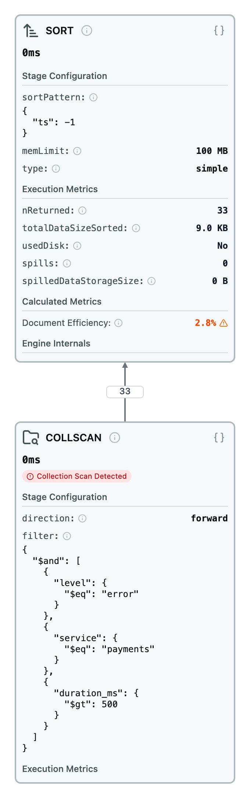
COLLSCAN внизу, SORT наверху, между ними — 33 документаЧисло 33 на стрелке показывает, что перебор коллекции отдал сортировке уже отфильтрованные документы. Сервер прочитал 1200, отобрал 33 и только их отсортировал — фильтр применяется на шаге чтения, а не после него.
Каждую карточку можно рассмотреть отдельно. У шага COLLSCAN инструмент ставит красную пометку.
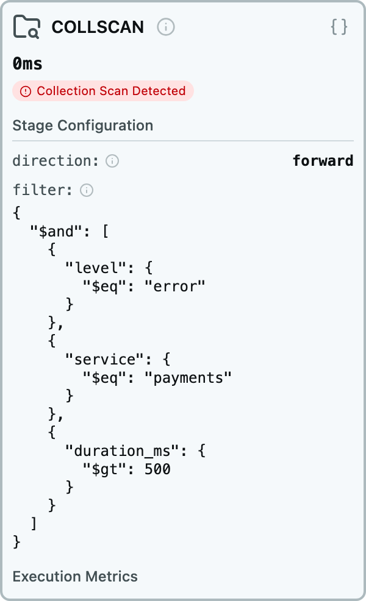
COLLSCAN: пометка Collection Scan Detected, направление обхода и фильтр, который сервер применял к каждому документуВ карточке видно, что сервер шёл по коллекции вперёд (direction: forward) и к каждому из 1200 документов применял фильтр из трёх условий. Условия он переставил в своём порядке — это нормально: порядок условий в тексте запроса на выполнение не влияет.
Тот же план в одну строку
У блока Execution Stats три вкладки: Analysis — карточки, ASCII — то же дерево текстом, JSON — исходный кусок плана. Вкладка ASCII удобнее всего для отчёта: весь план помещается в четыре строки, и числа каждого шага стоят рядом.
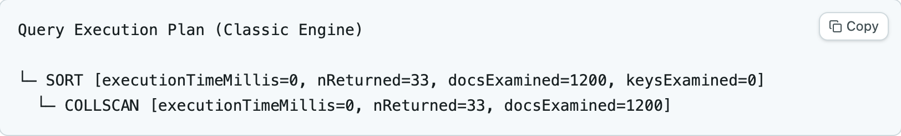
SORT вызывает COLLSCANПорядок в текстовом виде обратный схеме. В карточках нижний шаг выполняется первым, а в ASCII первым напечатан тот, кто вызывает остальных. Число docsExamined=1200 стоит у COLLSCAN — именно этот шаг прочитал всю коллекцию.
Разбор по правилу ESR
Отдельный блок внизу страницы раскладывает запрос на три части и сверяет их с индексом. Без индекса он показывает только разбор запроса.
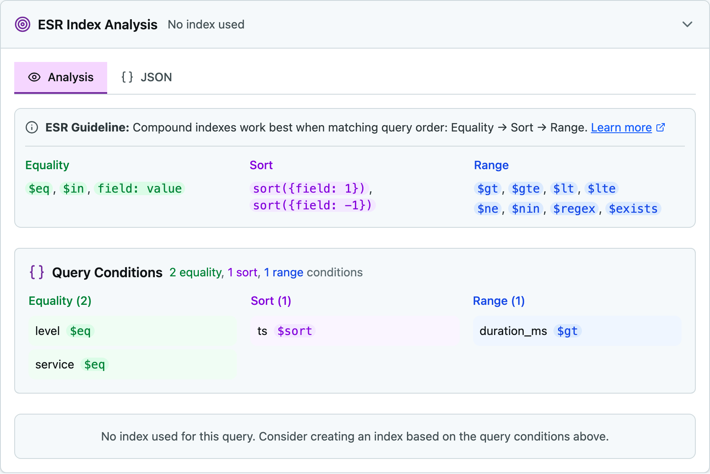
Это готовый ответ на первый шаг задачи 2. Инструмент сам нашёл в запросе два условия равенства (service и level), одну сортировку (ts) и один диапазон (duration_ms) — остаётся поставить их в индекс в порядке E, S, R. Разбор по буквам в отчёте всё равно пишется словами: на приёмке спрашивают, почему порядок такой, а не какой экран это показал.
Ссылка на разбор
Кнопка внизу карточки ввода сворачивает план в адрес — его и нужно сдать вместе с отчётом.
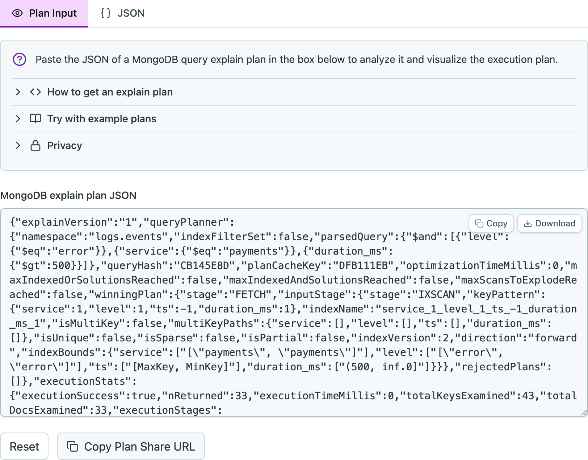
Весь план упакован в саму ссылку, на сервере сайта он не хранится. Отсюда два следствия: ссылка получается длинной, и она работает, пока вы её не потеряли — восстановить её по списку своих разборов нельзя, аккаунта на сайте нет. Поэтому файлы plan-*.json сдаются вместе со ссылками.
Сайт считает числа и подсвечивает подозрительные места, но решение об индексе принимает разработчик. Индекс, у которого все плитки выглядят лучше, вполне может оказаться хуже верного — такой случай разбирается в задаче 3. Плитка «зелёная» означает только то, что проверка инструмента прошла, а не что запрос хорош.
Медленные ошибки платежей
Дежурный инженер ищет в журнале ошибки сервиса payments, обработка которых заняла больше полусекунды, и смотрит их от свежих к старым. Запрос уже написан:
db.events.find({ service: "payments", level: "error", duration_ms: { $gt: 500 } }).sort({ ts: -1 })
- Выполните запрос и посчитайте результат. Число записей даст
db.events.countDocuments()с тем же фильтром. Запишите его. - Выгрузите план в
plan-1.jsonлюбым из трёх способов §3, а что смотреть в разборе — в §4. - Разберите план на Paste the Plan. Найдите на схеме шаги выполнения и три числа:
nReturned,totalDocsExamined,totalKeysExamined. - Сохраните ссылку на разбор кнопкой обмена и запишите её в отчёт.
Ожидаемая картина: возвращено 33 документа, просмотрено 1200, записей индекса просмотрено 0. В дереве выполнения два шага — COLLSCAN внизу и SORT над ним. Нижний означает, что сервер прочитал всю коллекцию, верхний — что сортировку он делал в памяти уже после чтения, потому что готового порядка у него не было.
В отчёт
- три числа плана;
- названия шагов в порядке снизу вверх;
- ссылка на разбор;
- одно предложение: почему сервер прочитал 1200 документов, чтобы вернуть 33.
§5Правило ESR
Индекс — это отсортированный список значений поля со ссылками на документы. Составной индекс хранит несколько полей сразу, и порядок полей в нём важен: список отсортирован сначала по первому полю, внутри одинаковых значений — по второму, и так далее.
Порядок полей подбирают по правилу ESR — Equality, Sort, Range. Условия запроса делятся на три вида, и в индекс они ставятся в этом порядке:
service: "payments", level: "error".первымиsort: здесь ts.вторыми$gt, $lt, $gte, $lte. Здесь duration_ms.последнимиПорядок объясняется устройством индекса. Равенство сужает список до одного непрерывного участка индекса. Внутри этого участка документы уже лежат в порядке следующего поля — поэтому поле сортировки ставят сразу за равенствами: сервер читает участок подряд и получает готовый порядок, отдельный шаг SORT ему не нужен. Диапазон даёт участок переменной длины и порядок внутри себя не сохраняет, поэтому его ставят в конец.
Построить индекс и повторить замер
- Разберите запрос из задачи 1 по ESR. Выпишите, какие поля попадают в E, какое в S, какое в R.
- Создайте индекс в оболочке:
db.events.createIndex({ service: 1, level: 1, ts: -1, duration_ms: 1 }). Числа задают направление сортировки поля: 1 — по возрастанию, −1 — по убыванию. - Снимите план заново в
plan-2.jsonтем же способом, что и в задаче 1. - Разберите его на Paste the Plan и сохраните ссылку.
Ожидаемая картина: возвращено те же 33 документа, просмотрено 33, записей индекса просмотрено 43. Шагов снова два — IXSCAN внизу и FETCH над ним. Шаг SORT из плана исчез.
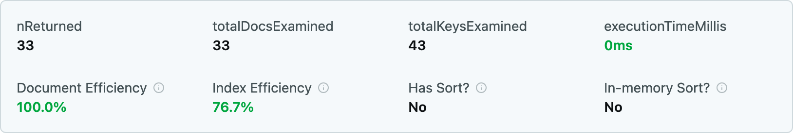
NoСравните с кадром из §4. Изменились три плитки: просмотрено стало 33 вместо 1200, появилось число просмотренных ключей, а In-memory Sort? сменилась с Yes на No. Третья из этих перемен и есть результат задачи: сортировку теперь обеспечивает индекс.
Дерево тоже стало короче — шага SORT в нём больше нет:
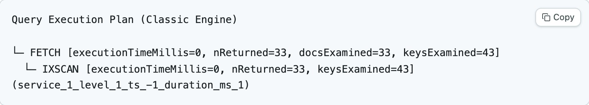
IXSCAN в скобках — имя индекса, который выбрал серверИмя индекса в скобках MongoDB собрала из его полей: service_1_level_1_ts_-1_duration_ms_1. По нему на приёмке видно, каким индексом снят план и не остался ли в коллекции индекс от прошлой задачи.
Карточка шага IXSCAN показывает, какой индекс выбрал сервер и как тот устроен:
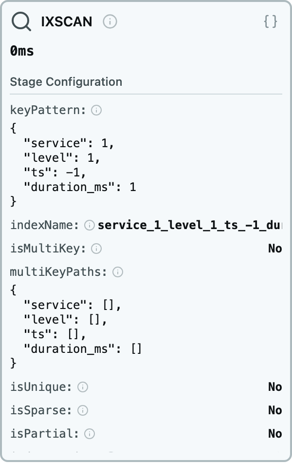
IXSCAN: keyPattern — поля индекса в том порядке, в котором они в нём лежат, с направлением каждогоНиже в этой карточке есть строка indexBounds — границы участка индекса, по которому сервер прошёл. У полей с равенством там одно значение (["payments", "payments"]), у диапазона — интервал ((500, inf.0]), у поля сортировки — весь диапазон целиком. Длина этого участка и даёт 43 просмотренных ключа.
Блок ESR внизу страницы теперь сверяет запрос с индексом и подтверждает порядок полей:
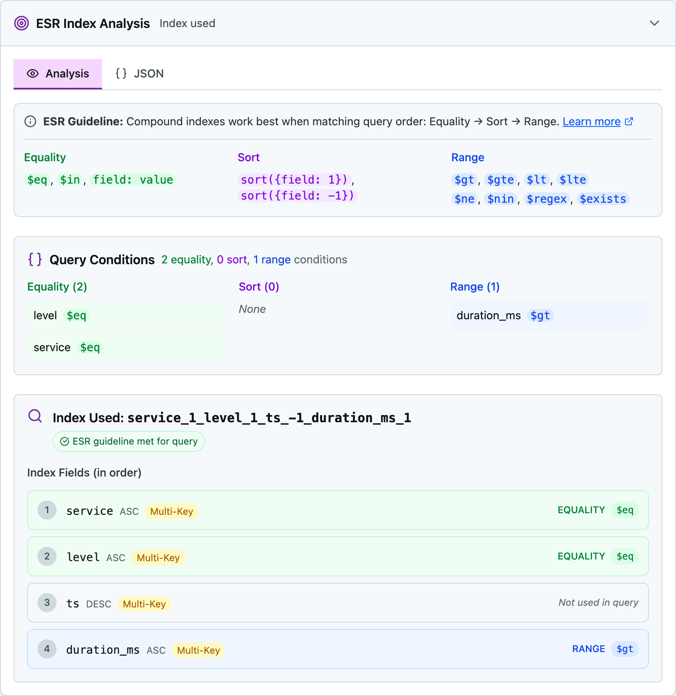
Два места на этом кадре читаются не сразу. Sort (0) вверху означает, что отдельной сортировки в плане больше нет: её взял на себя индекс, а инструмент считает условия по шагам плана. По той же причине поле ts в списке помечено «Not used in query»: инструмент сопоставляет поля индекса с условиями фильтра, а сортировку в этот список не заносит. Работу поля ts проверяют не по этой пометке, а по отсутствию шага SORT в дереве.
В отчёт
- разбор запроса по E, S и R;
- команда создания индекса;
- три числа нового плана и названия шагов;
- ссылка на разбор;
- во сколько раз уменьшилось число просмотренных документов;
- одно предложение: почему из плана пропал шаг
SORT.
Проверить, как порядок полей меняет план
Индекс покрывает те же четыре поля — меняется только их порядок. Каждый вариант проверяется отдельно: старый индекс удаляется, создаётся новый, план снимается заново.
// посмотреть, какие индексы сейчас есть, и узнать имя db.events.getIndexes() // удалить по описанию ключей db.events.dropIndex({ service: 1, level: 1, ts: -1, duration_ms: 1 }) // вариант А: диапазон впереди db.events.createIndex({ duration_ms: 1, service: 1, level: 1, ts: -1 }) // вариант Б: диапазон перед сортировкой db.events.createIndex({ service: 1, level: 1, duration_ms: 1, ts: -1 })
Снимите план на каждом из двух вариантов и заполните таблицу. Первая и вторая строки у вас уже есть из задач 1 и 2.
| Индекс | Порядок | Возвращено | Документов просмотрено | Ключей просмотрено | Шаги плана |
|---|---|---|---|---|---|
| нет | — | 33 | 1200 | 0 | COLLSCAN → SORT |
service, level, ts, duration_ms | E, S, R | 33 | 33 | 43 | IXSCAN → FETCH |
duration_ms, service, level, ts | R, E, S | 33 | ? | ? | ? |
service, level, duration_ms, ts | E, R, S | 33 | ? | ? | ? |
В отчёт
- заполненная таблица целиком;
- объяснение, почему в варианте А просмотрено столько ключей;
- объяснение, почему в варианте Б остался шаг
SORT; - вывод: какой из четырёх вариантов вы оставили бы в рабочей базе и почему.
Сверьте себя
Дальше — те же два плана, снятые на исходных данных. Открывайте после того, как заполнили таблицу своими числами.
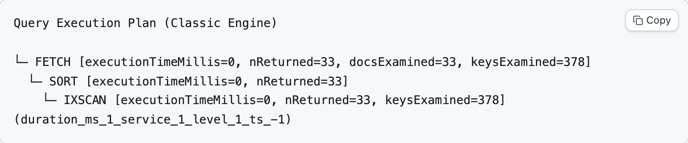
duration_ms впереди: просмотрено 378 ключей, и шаг SORT вернулся в планУ варианта А обе цифры хуже. Ключей просмотрено 378 — в девять раз больше, чем у индекса по ESR, потому что первым полем стоит диапазон: сервер проходит весь участок «дольше 500 мс», а туда попадают события всех сервисов и всех уровней. Сортировка при этом всё равно в памяти. Видно это и по плиткам:
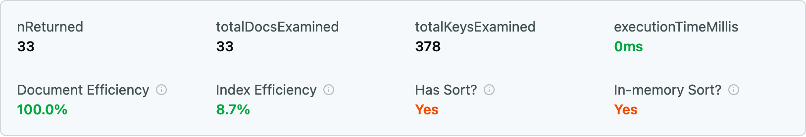
У варианта Б число просмотренных ключей меньше, чем у остальных трёх.
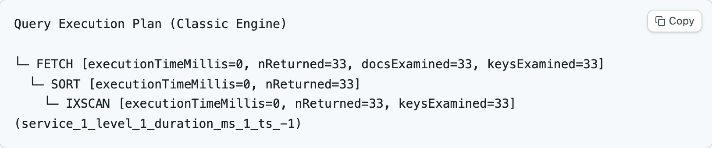
duration_ms перед ts: ключей всего 33 — меньше, чем у верного варианта, — но SORT тоже остался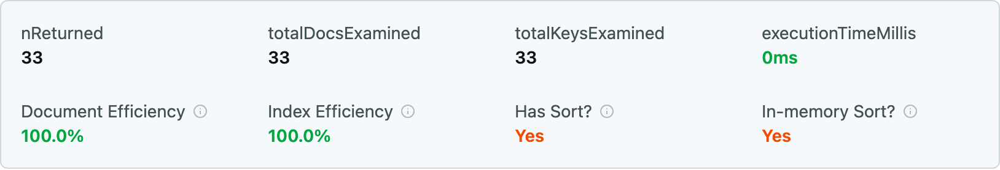
Yes говорит, что с индексом что-то не такОбе доли по 100%, ключей меньше, чем у остальных вариантов, и при этом индекс хуже верного. Причина в том, что поле сортировки ts стоит после диапазона: внутри участка, отобранного диапазоном, порядок по ts не сохраняется, и сервер досортировывает результат отдельным шагом. Число просмотренных ключей стоимость этого шага не учитывает.
Сортировка в памяти ограничена 100 мегабайтами. На 1200 записях она проходит незаметно, на реальном журнале запрос с таким индексом упадёт с ошибкой. Поэтому в рабочей базе оставляют вариант по ESR, хотя ключей он просматривает больше.
Подобрать индекс без подсказки
Второй запрос из той же коллекции: десять самых долгих ошибок за всё время.
db.events.find({ level: "error" }) .sort({ duration_ms: -1 }) .limit(10)
- Удалите индексы, оставшиеся от задачи 3. Индекс
_id_удалить нельзя и не нужно — он создаётся сервером. - Снимите план без индекса и запишите числа.
- Разберите запрос по ESR и создайте индекс сами. Диапазона в этом запросе нет — значит, в индексе будет два поля.
- Снимите план заново и сохраните ссылку на разбор.
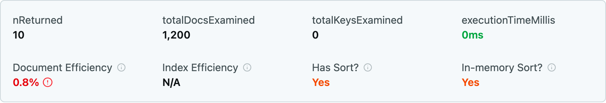
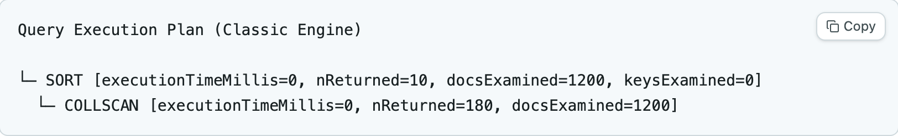
Ориентир: без индекса запрос читает всю коллекцию — 1200 документов. С верно подобранным индексом сервер просматривает 10 ключей и читает 10 документов, а в плане появляется шаг LIMIT. Кадра с верным ответом здесь нет намеренно — эту задачу вы делаете сами.
В отчёт
- ваш индекс и объяснение порядка полей;
- числа до и после;
- ссылка на разбор;
- одно предложение: почему в коллекции 180 ошибок, а сервер прочитал только 10 документов.
§6Отчёт и сдача
Отчёт — один файл README.md в вашем репозитории, склонированном в папку work/, как в ПР-01. Рядом лежат выгруженные планы: по ним преподаватель проверит числа, если ссылка перестанет открываться.
work/praktikum-explain/
Сводная таблица в начале отчёта — обязательная часть: шесть строк по числу снятых планов, в каждой индекс, три числа и шаги плана. Остальной текст идёт после неё по задачам.
Чем totalKeysExamined отличается от totalDocsExamined. Почему шаг FETCH нужен, если индекс уже нашёл документы. Почему индекс из задачи 2 просматривает 43 ключа, а возвращает 33 документа. Что случится с этим индексом при вставке новой записи в журнал. Почему на индексы не ставят все поля подряд. Ответ «так вышло в инструменте» не принимается: числа с сайта нужно объяснить самому.
§7Шпаргалка
db.col.find(q).explain(
"executionStats")
db.col.getIndexes()
db.col.createIndex(
{ a: 1, b: -1 })
db.col.dropIndex(
{ a: 1, b: -1 })
E — равенство
S — sort
R — диапазон
COLLSCAN — перебор
IXSCAN — по индексу
SORT — в памяти
Дальше
Полный разбор индексов и плана выполнения — главы 3.2 и 3.3 модуля 3: составные и уникальные индексы, покрывающие запросы, выбор плана сервером и кэш планов. Здесь разобран только базовый случай, которого хватает, чтобы найти полный перебор в своём коде.